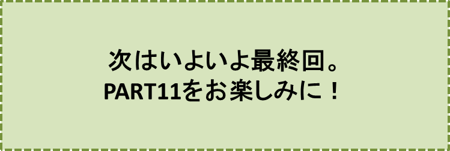

カラスの大王物語-PART10-
『目が覚めれば……』の巻
笠原正雄
最初に、夢の世界から目覚めたのはゴンでした。背伸びをし、大アクビをしたのもほんの束の間、
“ジロー君、ジロー君、ここはお家（うち）の近くですよ！”
というように大声で鳴きながら、ジローのひざを前足で、何度も軽く叩きます。
ジローは目を覚まし、周りを見渡しました。
なんと、ここはマイ広場！どちらの方向を見ても、全て見覚えのある景色です。ジローは思わず、
「わーい、マイ広場だ！」
と叫びました。
タマもその声に目を覚まし、素早い身のこなしで飛び起きると、あたりを見渡し、弾かれたようにピョーンと大きくジャンプをして、真っ先に川岸に上陸です。
“お母さーん。心配しているでしょ。タマは無事ですよ。帰ってきましたよ”
と思ったに違いありません。ジローやゴンの方には振り返りもしないで、一目散に走り始めました。
ジローもゴンもタマの素早さにびっくりです。
「タマちゃーん！元気でね！」
という別れの挨拶にも、全く振り返りもしないで、次第、次第に小さくなっていき、夕暮れ近づくマイ広場から、すっかり姿を消してしまいました。
ジローはちょっぴり、寂しさを感じました。
“そうだ モクレンの葉っぱのボートさんにもお礼を言わなくちゃね”
と思い、川を振り返ってボートを探し求めました。
……しかし、お世話になったモクレンの葉っぱのボートは、早くもどこにも見当たりません。首を思い切り伸ばして、目を凝らして、下流の方を眺めてみましたけれど、影も形もありません。
タマが“さよなら”との言葉も残さずに走り去り、モクレンのボートも夕暮れの川に消えてしまって、イチローもゴンも寂しさが益々募ります。
ジローは深い溜息を、ふうっと吐いて、川面に目を落としました。
あれっ、どういうことでしょう。モクレンの小さな葉っぱが、岸辺近くで、ゆらゆら漂っています……。
ジローは小さなモクレンの葉っぱに懐かしさのようなものを感じ、身をかがめて拾い上げようと手を伸ばしました。
……しかし、モクレンの葉っぱは、ジローの手をするりとすりぬけ、川岸をゆっくり離れました。
すぐ近くに渦を巻いた場所がありましたが、モクレンの小さな葉っぱは、渦の近くでジロー達との別れを惜しむかのように、何回も、何回もぐるぐる、ぐるぐるまわり、渦の中に消えてしまいました。
この様子を見ていたゴンがジローに寄り添い
“くーん”“くーん”
と鳴いて、寂しい胸の中を訴えます。ジローも、全く同じ気持ちです。
しかし、こんな感傷にひたっている暇はありません。
“お父さんやお母さんが、一晩も二晩も心配で眠れぬ夜を送っているに違いない。近所の人達や警察の人達と一緒に近くを探し回っているかも知れない……”
ジローもゴンもこの思いにせき立てられ、弾かれたように家路を急ぎます。我が家が遙か向うに見えました。ジロー達はギアチェンジ。全力で走って、走って、まっしぐら、家に向かって走ります。
扉を開けるのももどかしく、玄関に駆け込みます。ジローは
「すみませーん。心配をおかけしました。申しわけありません！」
と叫びます。ゴンは
“くーん”“くーん”
と鳴いて、お母さんに飛びつき、思いっきり、甘えます。
あぁしかし、どうしたことでしょう。お母さんは口をあんぐり開けたまま立ちつくしています。心配していた様子など、全くありません。
ジローも、ゴンも拍子抜け、お母さんと同じように立ちつくしたままとなりました。これは一体、どういう事態なの？と、ジローもゴンも戸惑います。
この様子に、お母さんはようやく普段通りの優しい顔に戻って
「おおげさね。ジロー君もゴンちゃんも一体どうしたの？いつもより30分ほど遅かっただけじゃないの。心配なんかしていなかったわ。
……さあ、ゴーンちゃん、いつも早めの夕食のゴーンちゃん。夕食の準備が、もうできていますよ。お上がりなさい。ゴンちゃんの大好きなサツマイモ、沢山つけておきましたよ」
と普段通りに、ゴンの顔を優しくなでて語りかけます。
お母さんの優しい声にも、ゴンは、
“あまり食べたくないなぁ”
というように、ときどきジローの方を振り返りながら、ゆっくり夕食の食卓に向います。
ジローも、ゆっくり階段を上り、2階の勉強部屋に向います。重い足を運びます。
“ふうっ”
と大きくため息をついて、椅子に腰を降ろします。
机の上で、いつも本立てに挟まれて立てかけられているフリスビー、もはやありません。ある筈がありませんよね。
ジローが気合いを入れて投げたフリスビーは、突風のような気流に乗って、マイ広場の遥か向うにある森の彼方へと、消えていってしまったのですから、悔やんでみても仕様が無いこと、ジローは自分自身に言い聞かせます。
“そう言えば、「カラスの大王様の森」で開かれた裁判の場でも、フリスビーは本立てに挟まれていたなぁ、裁判所は僕のやり方をそっくり真似たのかなぁ……”
ジローは苦笑します。ジローの頭の中に、
“インコの花五郎の甲高い声、キツネのコンミィー、恐かった牢屋番、大熊のクマ吉、人懐こかったカエルのケロケロ、大きな耳と大きなハンコがご自慢だったミィミィ村長、そして網張りに大忙しだったクモのクンマー君”
様々な動物達がジローの頭の中に何度も甦ってきます。
“「カラスの大王様の森」でヒョウのレオナが研いでいたピッカピカの斧で真っ二つに割られたのだから、フリスビーが机の上にないのは仕方がないことだ……”
ジローは、机の上のカラッポの本立てをぼんやり眺めながら考え込みます。
“あれっ、ひょっとしたら、ゴンも僕もフリスビーが消えてしまった後、クスノキの根っこで長ーい昼寝をしてしまって、同じ夢を見ていたのかな……。そんなことあり得る！？”
ジローは自問自答です。
“世の中、説明のつかないことが沢山あるんだ。あって当たり前じゃないかなぁ。みんな説明のつくことばかりだったら、世の中、つまらないよねぇ”
ジローは納得します。ほんの少しばかり、心の中が明るくなりました。
ジローは、教科書を取り出して、普段通りに夕食前の勉強です。
中村先生伝授の“復習流”に従って、「数学」「英語」「国語」「理科」の教科書の復習、復習が始まります。勉強に気合いが入ります。
♪♪♪♪コーヒーブレイク♪♪♪♪
